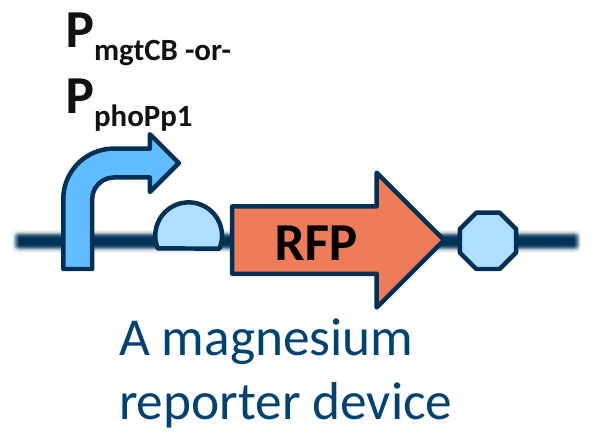
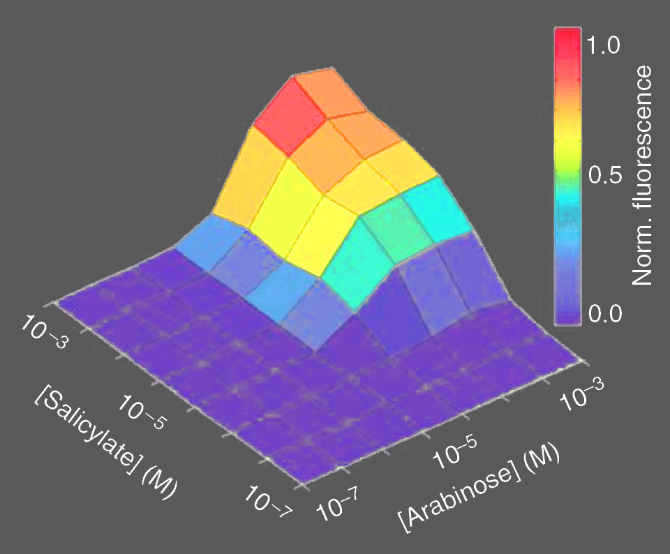
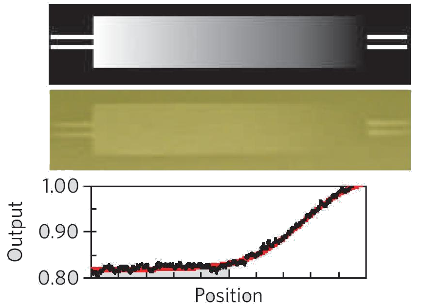
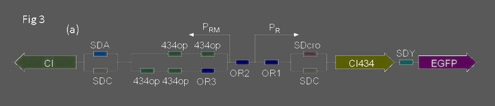
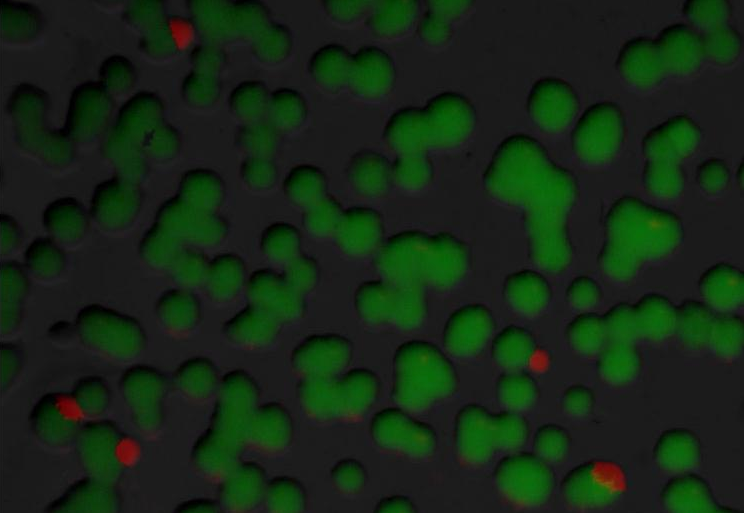
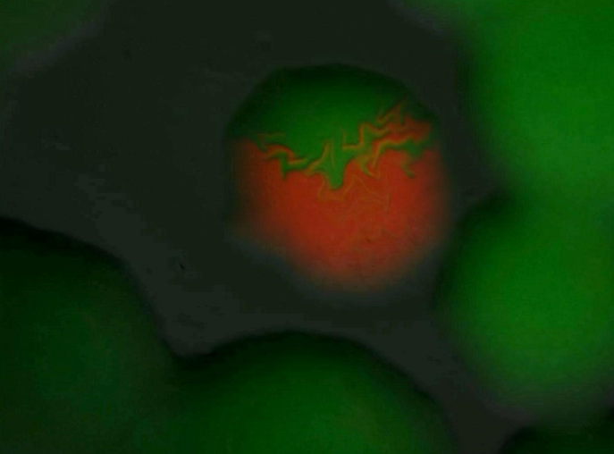

Experimental Design
- Differential Expression
- Transfer Functions
- Dynamics
- Population Heterogeneity







iGEM: Peking, 2007
Another measured property of a strain is population heterogeneity. Here, one cell in the population does something different than other cells. Sometimes this is an intentional property. For example, this variant of the toggle switch from the Peking iGEM team in 2007 is designed to cause population heterogeneity. Thus, they need to look at individual cells in the population and measure two different channels of fluorescence. However, often population heterogeneity is an unwanted and challenging-to-measure property of a strain. For example, you might have a biosynthetic pathway in a cell in which only 10% of the population is producing the genes needed for biosynthesis. With bulk measurements, it is impossible to know that such heterogeneity exists, but it is challenging to decipher this quality of your design directly. If the heterogeneity is due to genetic mutation, this can be pulled out from single-cell sequencing. There are efforts to develop other single-cell assays in the works, but as of 2014, sequencing and fluorescence are the only off-the-shelf way to ask questions about population heterogeneity. Population heterogeneity, or phase variation. A toggle-switch circuit from the Peking 2007 iGEM team, built from cI and cI434 with an EGFP reporter, above two fluorescence images of colonies: a field of mostly green colonies with a few red, and a close-up of one colony red at its centre and green around it.I have engineered a genetic circuit that produces a pulse of GFP activity after IPTG induction. It lasts for 30 minutes and then shuts off. How can I quantify this phenotype?
This requires following cells over time, so you will need a fluorescence microscope. Question to ponder, on the amber ground: I have engineered a genetic circuit that produces a pulse of GFP activity after IPTG induction, lasting 30 minutes and then shutting off. How can I quantify this phenotype?